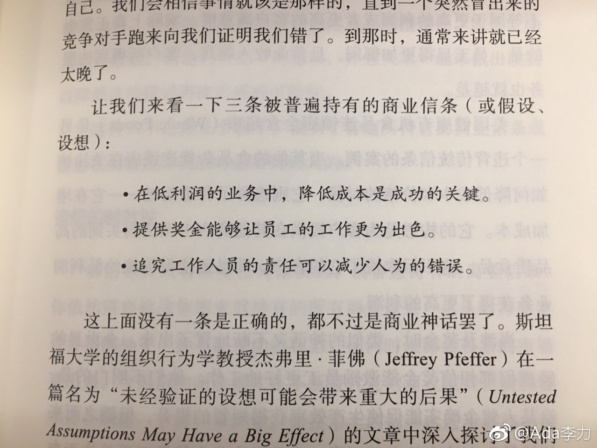

图中举例的三个商业信条，是基于过去的经验总结的。说他们错误，是因为不再有效。“任何设想可能只是在一个特定的时间段内才成立”。#创业#尤其要重新评估下这些已经当作原则的设想。@Ada李力:#读书#图中举出的三个商业信条都是错误的。我吃惊在于，这三条在目前的公司里都有事例证明被实践过。即时我未必赞同这三条错误的做法，但是我也没有大张旗鼓滴反对，也就是在减少人为错误这事上，为方式不同而跟同事讨论过。例如，同事做法是狠批出了错误的员工，而我觉得更应该从方法，工具或者流程上减少出错概率。改变信条很难，跟否定一个人的根本一样。所以，这也是创业要找价值观一致合伙人的原因。